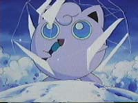

|
|
|
189. Freeze Frame

Ash, Misty, Brock, and Todd are still looking for Articuno. They
send out Golbat and Noctowl. Golbat finds something so they all
follow it to find a frozen Jigglypuff.
Todd thinks that articune froze it. Cyndaquil uses flamethrower to
thaw it out. Jigglypuff says that Articuno went to Snowtop Mountain.
Team Rocker start to climb strait up Snowtop. Lots of Spearow come
andknoock them down. and knock them off.
Meanwhile the gang come across the Snowtop Peak Pokemon center, the
highest center in the world. Inside Ash says to have Jigglypuff to
sing to Articuno so it is Asleep, but Todd says he wants a shot of
it as Big, Powerfull, and Majestic, one that captures a little bit
of what an Articuno is like. Articuno come to Snowtop Mountain for
longer then anyone can remember. Joy and Jenny show them a lifesize
articuno statue.
Team rocket landed on a small ledge. Meowth tries to go t sleep but
Jesse wont let him. Soon a blizard comes and they spot Articuno.
The gang hears the ledgend of the travelers that were saved by
Articuno. Pikachu and Jiggly sense something. A blizzard comes and
then Team Rocket were dumped in front of the Pokemon center. Todd
thinks he saw Articuno. They bring Team Rcoket into the center. Team
Rocket tells their story, which is like the travelers story. Ash and
Todd leave without Brock or Misty to find Articuno. Misty and Brock
followwhen they find out their gone. Rocket goes out to get Articuno
too. Nurse Joy and Officer Jenny are worried because they are all
outside and a blizzard is on its way.
They are all traped in the blizzard when they all see Articuno fly
down to them. He holds back the blizard to show them that there is a
cliff right in front of them, if Articuno didnt stop them they would
have died. Team Rocker comes and does their Motto. They try to catch
Articuno. They fight Articuno but Ash comes in to save it. But
Articuno uses Ice Beam and Wobbofett uses Mirror Coat to reflect it
back at Articuno, it dodges it. Todd and Ash fall off the ciff and
Articuno goes down too. With Articuno gone the blizzard comes back
so Brock and Misty goes back to the center to get help.
Todd and Ash are at the bottom of the cliff. Todd thinks that
Articune saved it. It is hoovering above their head. Jiggly and
Pikachu float down too. Soon Team Rcoker falls down. Seeing Articuno
they try again to get it. They all attack, and articuno uses Icy
Wind to deflect Team Rocket's attacks. Then agility and an Ice Beam
at Team Rocket. But Wobbofett uses mirror coat again. Articuno uses
blizzard to blast off Team Rocket and Jigglypuff. Articuno stays so
Todd can take a picture of it. The sun comes out and It starts
shining. Todd takes a pic of Articuno looking big and majestic.
Articuno flys away. Misty and Brock come with Joy and Jenny. Todd
says that he will hang around this pokemon center so he can take
pics of the pokemon around there. It shows Todds pic on the wall of
the Pokemon Center.
Team Rocket are in a cave and are freezing. They try to go to sleep,
if they sleep they might never wake up again so Meowth keeps Jesse
and James. Jigglypuff comes and starts to sing. Team Rocket falls
asleep.
Whos that Pokémon? Charazard
|
|
|
|